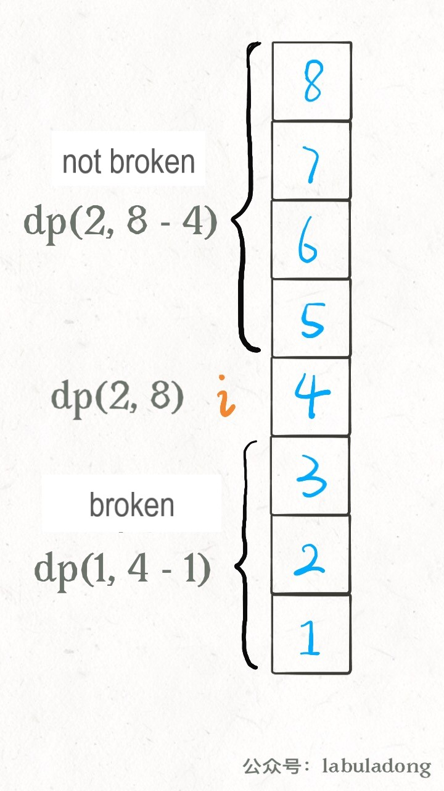

Translator: timmmGZ
Today I am going to talk about a very classic algorithm problem. Suppose there are several floors in a high building and several eggs in your hands, lets calculate the minimum number of attempts and find out the floor where the eggs just won’t be broken. Many famous Chinese large enterprises, Google and Facebook often examine this question in a job interview, but they throw cups, broken bowls or something else instead of eggs, because they think throwing eggs is too wasteful.
Specific problems will be discussed later, but there are many solutions to this problem, Dynamic Programming has already had several ideas with different efficiency, moreover, there is an extremely efficient mathematical solution. Anyway, let’s throw the tricky and weird skills away, because these skills can‘t be inferior to each other, it is not cost effective to learn.
Let’s use the general idea of Dynamic Programming that we always emphasized to study this problem.
Question: There is a N-storey building indexed from 1 to N in front of you, you get
K eggs (K >= 1). It is determined that this building has floor F
(0 <= F <= N), you drop an egg down from this floor and the egg just won’t be
broken (the floors above F will break, and the floors below F won’t break).
Now, in the worst case, how many times at least do you need to throw the eggs to
determine what floor is this floor F on?
In other words, you need to find the highest floor F where you can’t break the eggs, but what does it
mean how many times “at least” to throw “in the worst”? We will understand by giving an example.
For example, regardless of the number of eggs, there are 7 floors, how do you find the floor where the eggs are just broken?
The most primitive way is linear search: Let’s throw it on the first floor and it isn’t broken, then we throw it on the second floor, not broken, then we go to the third floor……
With this strategy, the worst case would be that I try to the 7th floor without breaking the eggs
(F = 7), that is, I threw the eggs 7 times.
Now you may understand what is called “the worst case”, eggs breaking must happen when the search interval is exhausted (from 0 till N), if you break the eggs on the first floor, this is your luck, not the worst case.
Now let’s figure out what it means how many times “at least” to throw? Regardless of the number of eggs, it is still 7 floors, we can optimize the strategy.
The best strategy is to use the Binary Search idea. first, we go to (1 + 7) / 2 = 4th floor and throw
an egg:
If it is broken, then it means F is less than 4, therefore I will go to (1 + 3) / 2 = 2th
floor to try again…
If it isn’t broken, then it means F is greater than or equal to 4, therefore I will go to
(5 + 7) / 2 = 6th floor to try again…
In this strategy, the worst case is that you try to the 7th floor without breaking the eggs
(F = 7), or the eggs were broken all the way to the 1st floor (F = 0). However, no matter
what the worst case is, you only need to try log2(7) rounding up equal to 3 times, which is less than 7
times you just tried. This is the so called how many times at least to throw.
PS: This is a bit like Big O notation which is for calculating the complexity of algorithm.
In fact, if the number of eggs is not limited, the binary search method can obviously get the least number of
attempts, but the problem is that now the number of eggs is limited by K, and you can’t use the
binary search directly.
For example, you just get 1 egg, 7 floors, are you sure to use binary search? You just go to the 4th floor and
throw it, if the eggs are not broken, it is okay, but if they are broken, you will not have the eggs to continue the
test, then you can’t be sure the floor F on which the eggs won’t be broken. In this case, only linear
search can be used, and the algorithm should return a result of 7.
Some readers may have this idea: binary search is undoubtedly the fastest way to eliminate floors, then use binary search first, and then use linear search when there is only 1 egg left, is the result the least number of eggs thrown?
Unfortunately, it’s not, for example, make the floor higher, there are 100 floors and 2 eggs, if you throw it on the 50th floor and it is broken, you can only search from 1st to 49th floor linearly, in the worst case, you have to throw 50 times.
If you don’t use 「binary search」, but 「quinary search」 and 「decimal search」, it will greatly reduce the number of the worst case attempts. Let’s say the first egg is thrown every ten floors, where the egg is broken, then where you search linearly for the second egg, it won’t be more than 20 times in total.
Actually, the optimal solution is 14 times. There are many optimal strategies, and there is no regularity at all.
I talk so much nonsense in order to make sure everyone understands the meaning of the topic, and realize that this topic is really complicated, it is even not easy to calculate by hand, so how to solve it with an algorithm?
For the dynamic programming problem, we can directly set the framework we have emphasized many times before: what is the 「state」 of this problem, what are 「choices」, and then use exhaustive method.
The 「status」 is obviously the number of eggs K currently possessed and the number of floors
N to be tested. As the test progresses, the number of eggs may decrease, and the search
range of floors will decrease. This is the change of state.
The 「choice」 is actually choosing which floor to throw eggs on. Looking back at the linear search and binary search idea, the binary search selects to throw the eggs in the middle of the floor interval each time, and the linear search chooses to test floor by floor, different choices will cause a state transition.
Now the 「state」 and 「choice」 are clear, the basic idea of dynamic programming is formed: it must
be a two dimensional DP array or a DP function with two state parameters to represent the
state transition; and a for loop to traverse all the choices , choose the best option to update the status:
# Current state is K eggs and N floors
# Returns the optimal result in this state
def dp(K, N):
int res
for 1 <= i <= N:
res = min(res, Throw eggs on the i-th floor
this time)
return res
This pseudo code has not shown recursion and state transition yet, but the general algorithm framework has been completed.
After we choose to throw a egg on the i-th floor, two situations could happen: the egg is broken and
the egg is not broken. Note that the state transition is now here:
If the egg is broken, then the number of eggs K should be reduced by one, and the
search floor interval should be changed from[1..N]to[1..i-1], i-1 floors in
total.
If the egg is not broken, then the number of eggs K will not change, and the searched
floor interval should be changed from[1..N]to[i+1..N],N-i floors in total.

PS: Attentive readers may ask, if throwing a egg on the i-th floor is not broken, the search range of the floor is narrowed down to the upper floors, should it include the i-th floor? No, because it is included. As I said at the beginning that F can be equal to 0, after recursing upwards, the i-th floor is actually equivalent to the 0th floor, so there is nothing wrong.
Because we are asking the number of eggs to be thrown in the worst case, so whether the egg is
broken on the i floor, it depends on which situation’s result is larger:
def dp(K, N):
for 1 <= i <= N:
# Minimum number of eggs throwing in the worst case
res = min(res,
max(
dp(K - 1, i - 1), # broken
dp(K, N - i) # not broken
) + 1 # throw once on the i-th floor
)
return res
The recursive base case is easy to understand: when the number of floors N is 0, obviously no eggs
need to be thrown; when the number of eggs K is 1, obviously all floors can only be searched linearly:
Now, this problem is actually solved! Just add a memo to eliminate overlapping subproblems:
def superEggDrop(K: int, N: int):
memo = dict()
def dp(K, N) -> int:
# base case
if K == 1: return N
if N == 0: return 0
# avoid calculating again
if (K, N) in memo:
return memo[(K, N)]
res = float('INF')
# Exhaust all possible choices
for i in range(1, N
+ 1):
res = min(res,
max(
dp(K, N - i),
dp(K - 1, i - 1)
) + 1
)
# Record into memo
memo[(K, N)] = res
return res
return dp(K, N)
What is the time complexity of this algorithm? The time complexity of the dynamic programming algorithm is the number of subproblems × the complexity of the function itself.
The complexity of the function itself is the complexity of itself without the recursive part. Here the
dp function has a for loop, so the complexity of the function itself is O(N).
The number of subproblems is the total number of combinations of the different states, which is obviously the Cartesian product of the two states, and it is O(KN).
So the total time complexity of the algorithm is O(K*N^2) and the space complexity is O(KN).
This problem is very complicated, but the algorithm code is very simple, This is the characteristic of dynamic programming, exhaustive method plus memo/ DP table optimization.
First of all, some readers may not understand why the code uses a for loop to traverse the floors
[1..N], and may confuse this logic with the linear search discussed before. Actually not like so,
this is just making a 「choice」.
Let’s say you have 2 eggs and you are facing 10 floors, which floor do you choose this time? Don’t know, so just try all 10 floors. As for how to choose next time, you don’t need to worry about it, There is a correct state transition, recursion will calculate the cost of each choice, the best one is the optimal solution.
In addition, there are better solutions to this problem, such as modifying the for loop in the code to binary search, which can reduce the time complexity to O(K*N*logN); and then improving the dynamic programming solution can be further reduced to O(KN); use mathematical methods to solve, the time complexity reaches the optimal O(K*logN), and the space complexity reaches O(1).
But such binary search above is also a bit misleading, you may think that it is similar to the binary search we discussed earlier, actually it is not the same at all. Above binary search can be used because the function graph of the state transition equation is monotonic, and the extreme value can be found quickly.
Let me briefly introduce the optimization of binary search, In fact, it is just optimizing this code:
def dp(K, N):
for 1 <= i <= N:
# Minimum number of eggs throwing in the worst case
res = min(res,
max(
dp(K - 1, i - 1), # broken
dp(K, N - i) # not broken
) + 1 # throw once on the i-th floor
)
return res
This for loop is the code implementation of the following state transition equation:
First of all, according to the definition of the dp(K, N) array (there are K eggs and
N floors, how many times at least do we need to throw the eggs?). It is easy to know that when
K is fixed, this function must be It is a monotonically increasing, no matter how smart your
strategy is, the number of tests must increase if the number of floors increases.
Then notice the two functions dp(K-1, i-1) and dp(K, N-i), where i is
increasing from 1 to N, if we fix Kand N, treat these two functions
as function with only one variable i, the former function should also increase monotonically with the
increase of i, and the latter function should decrease monotonically with the increase of
i:
Now find the larger value of these two functions, and then find the minimum of these larger values, it is actually to find the intersection as above figure, readers who are familiar with binary search must have already noticed that this is equivalent to finding the Valley value, we can use binary search to quickly find this point.
Let’s post the code directly, the idea is exactly the same:
def superEggDrop(self, K: int,
N: int) -> int:
memo = dict()
def dp(K, N):
if K == 1: return N
if N == 0: return 0
if (K, N) in memo:
return memo[(K, N)]
# for 1 <= i <= N:
# res = min(res,
# max(
# dp(K - 1, i - 1),
# dp(K, N - i)
# ) + 1
# )
res = float('INF')
# use binary search instead of for loop(linear search)
lo, hi = 1, N
while lo <= hi:
mid = (lo + hi) // 2
broken = dp(K - 1, mid - 1)
# broken
not_broken = dp(K, N - mid) # not broken
# res = min(max(broken，not broken) + 1)
if broken > not_broken:
hi = mid - 1
res = min(res, broken + 1)
else:
lo = mid + 1
res = min(res, not_broken +
1)
memo[(K, N)] = res
return res
return dp(K, N)
I won’t discuss about other solutions here, I will just leave them in the next article.
I think our solution is enough: find the states, make the choices, it is clear and easy enough to understand, can be streamlined. If you can master this framework, then it’s not too late to consider those tricky and weird skills.